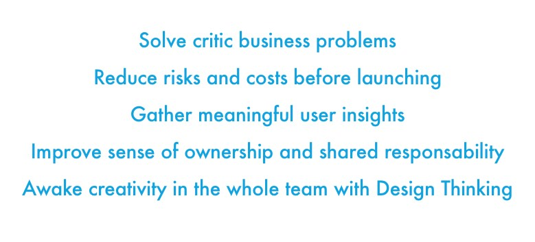
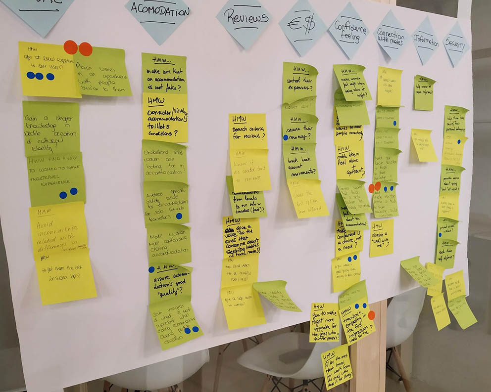
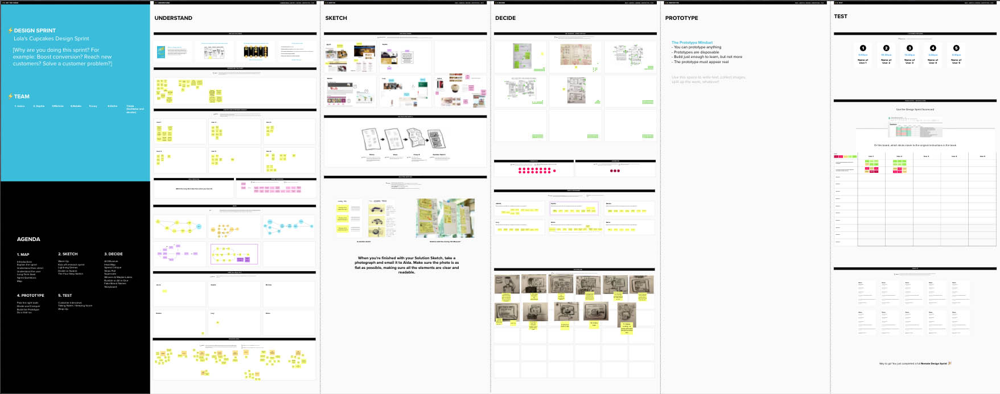
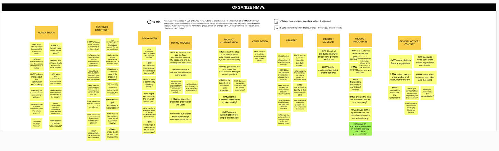
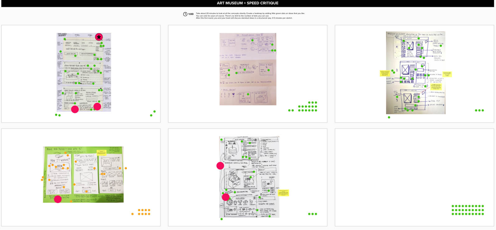
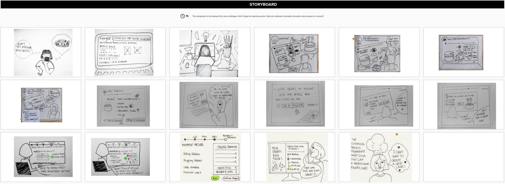

With the Google Design Sprint methodology we can go from conception to product validation in just 5 days of team work. This tool help us to understand critical business questions and reduce risks before launching. Design Sprints are an incredibly powerful process, democratic and fun, but it needs some preparation, an understanding of your users and the problem we want to solve.

As the Sprint Facilitator, it’s my job to keep the sprint steps and exercises on track and the team engaged all the time, trying to find the perfect combination betwen the individual ideation and thinking and the group dynamics to create common solutions. Everything discussed goes on the whiteboard, helping to organize the ideas and team's memory. Long term goal always has it's on highlighted place to remember always what's our aim.
Design Sprints are usually done in a physical space, with white walls to stick sticky notes, a big whiteboard to write all the ideas that come up and tons of sheets of paper and sharpies and colors to create fast drafts to present ideas in a really visual way. Sometimes teams work remotely and this is completely impossible. But nowadays, with the help of some online tools we can recreate the space and the dynamics to complete the steps of the sprint.
   